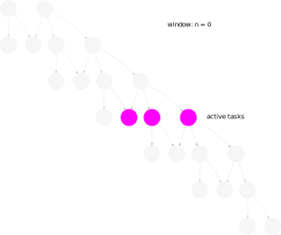

Cylc 8 Project Update
UM User Workshop June 2021
Hilary Oliver, NIWA

Deja Vu?
Have we progressed since Nov 2020?
(erm, yes!)
architecture

terminology
- Suite
- Suite daemon
- Batch system
- Job hosts
-
Suite is now WORKFLOW
- (a more widely understood term)
-
suite.rc=>flow.cylc
-
Suite daemon is now SCHEDULER
- (a more widely understood term)
-
Batch system is now JOB RUNNER
- (they're not all “batch systems”)
-
Job hosts replaced by PLATFORMS
- (resilience to hosts going down)
scheduler
new scheduling algorithm


Cylc 7 "spawn on submit"
Cylc 8 "spawn on demand"
- scheduler efficiency (incl. for parameterized cycling)
- network and UI efficiency (w/ incremental push update)
- start from any task(s) in the graph
- better "warm start"
- checkpoint restart not needed
- run partial graphs
- reflow multiple wavefronts of activity
- suicide triggers not needed for alternate paths
- no implicit dependence on previous-instance submit
- tasks can run out of cycle point order
- no unnecessary stalls downstream of failed tasks
- intuitive "window" based on active tasks
